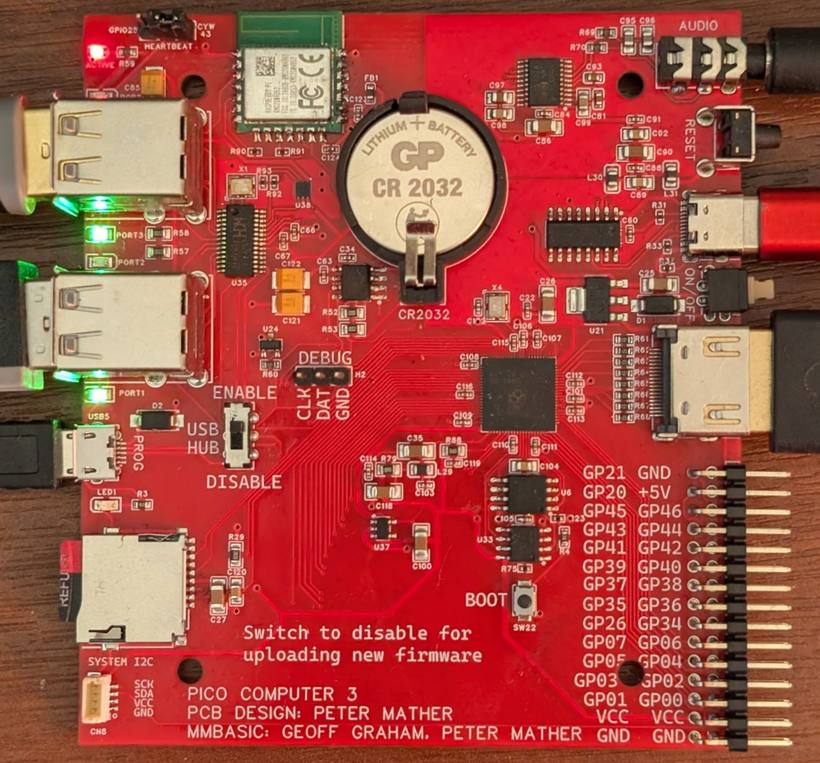

A genuine multi-tasking Unix on a single RP2350 microcontroller — booting from SD card, driving an HDMI screen and a USB keyboard, and carrying a complete C compiler that runs on the machine itself. No cross-development. No PC in the loop.

Pre-emptive multitasking, pipes, a Bourne shell and the classic V7 userland — plus the one true awk, vi and man pages.
A complete C89 toolchain on the board, generating native ARM code. Write it, build it and run it without leaving the machine.
R. T. Russell's BBC BASIC with graphics and sound, and an MMBasic translator that compiles to native code.